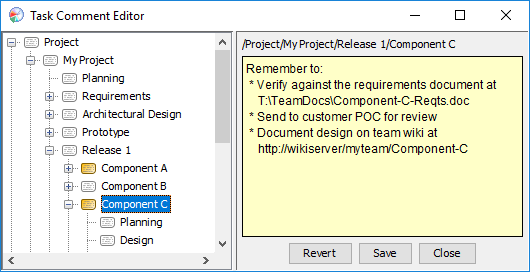
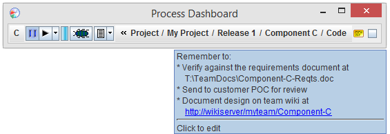
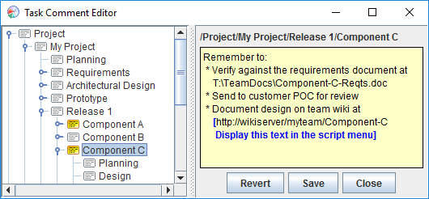

Notes and comments can be attached to any project or task in the dashboard. To create, view, or edit these notes, click the note indicator icon near the right edge of the main dashboard toolbar.
The Task Comment Editor window will appear.

This window displays your project/task hierarchy on the left. Click a particular project, component, or task to create, view, or edit the associated note. To delete a note, simply delete all the text in the note, then save the changes.
When a note is associated with the currently active task (or any of its hierarchical parents), the note indicator on the main dashboard toolbar will turn yellow, and the tooltip will provide the text of the note.

If you attach a note to a component or task within a team project, that note will be shared with other members of the team project when you perform a "Sync to WBS" operation.
Most people make use of many websites as they work. Your organization may have websites for tracking requirements, defects, and other issues. And your team may have websites for team collaboration.
These sites may include web pages that are relevant to a particular project, component, or task in the dashboard. You can easily link these webpages to your tasks in the dashboard. Just enter a note for a particular dashboard task or component, and include a webpage URL in the body of the note (as shown in the example above). The dashboard will discover these embedded URLs and automatically add them to the script button pull-down menu.

By default, the script button menu item will display the title of the target web page. If you want the menu item to display something else, just include the desired title after the URL, and enclose the item with square brackets []. (This can also be helpful if the website in question requires a login that would prevent the dashboard from retrieving the page title.) For example:
